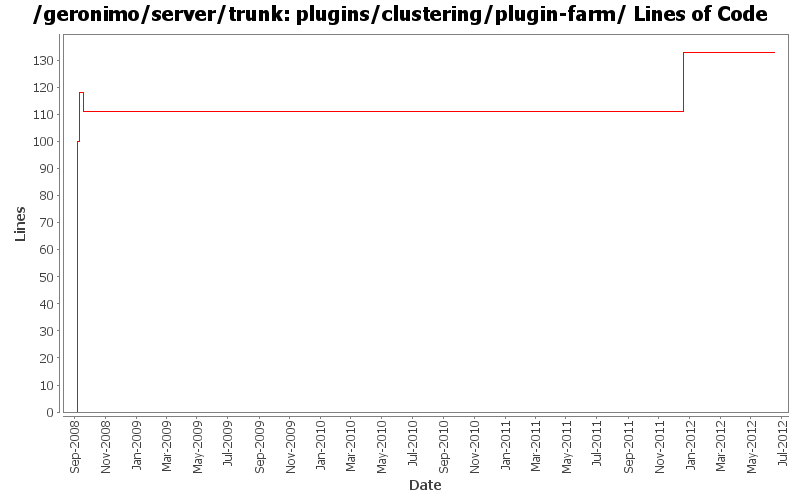

[root]/plugins/clustering/plugin-farm
 src
(0 files, 0 lines)
src
(0 files, 0 lines)
 main
(0 files, 0 lines)
main
(0 files, 0 lines)
 history
(1 files, 59 lines)
history
(1 files, 59 lines)
 plan
(1 files, 93 lines)
plan
(1 files, 93 lines)

| Author | Changes | Lines of Code | Lines per Change |
|---|---|---|---|
| Totals | 11 (100.0%) | 270 (100.0%) | 24.5 |
| djencks | 7 (63.6%) | 156 (57.8%) | 22.2 |
| rickmcguire | 2 (18.2%) | 112 (41.5%) | 56.0 |
| xiaming | 1 (9.1%) | 1 (0.4%) | 1.0 |
| dblevins | 1 (9.1%) | 1 (0.4%) | 1.0 |
Update trunk version to 4.0.0-SNAPSHOT
1 lines of code changed in 1 file:
GERONIMO-6240 Make several base geronimo functions (kernel, deployer, etc) DS services and make the car-maven-plugin take advantage of that. Server assembly doesn't work yet, builds framework.
31 lines of code changed in 1 file:
[maven-release-plugin] prepare release 3.0-M2
1 lines of code changed in 1 file:
[maven-release-plugin] prepare branch 3.0-M2
111 lines of code changed in 1 file:
GERONIMO-5290 fix many of the deprecation warnings from maven 3
4 lines of code changed in 1 file:
GERONIMO-4655 upgrade version to 3.0-SNAPSHOT, make a few things more consistent
1 lines of code changed in 1 file:
Inroduced a MulticastLocation gbean that hold the mutlicast connection info so it can be configured in one place yet consumed by multiple gbeans.
Added a HeartbeatMonitor ghsell command (not quite working) that will allow people to see what is moving on the heartbeat.
Renamed FarmCommand to ClusterCommand and its flags to -c and --cluster
1 lines of code changed in 1 file:
GERONIMO-4284 Add a separate datasource for plugin farm
1 lines of code changed in 1 file:
minor fix -- use the config subst. var that's set up
1 lines of code changed in 1 file:
GERONIMO-4284 spiff up the plugins with config-substitutions and use the node assembly in the its
18 lines of code changed in 1 file:
GERONIMO-4284 beginnings of plugin based farm management
100 lines of code changed in 1 file: